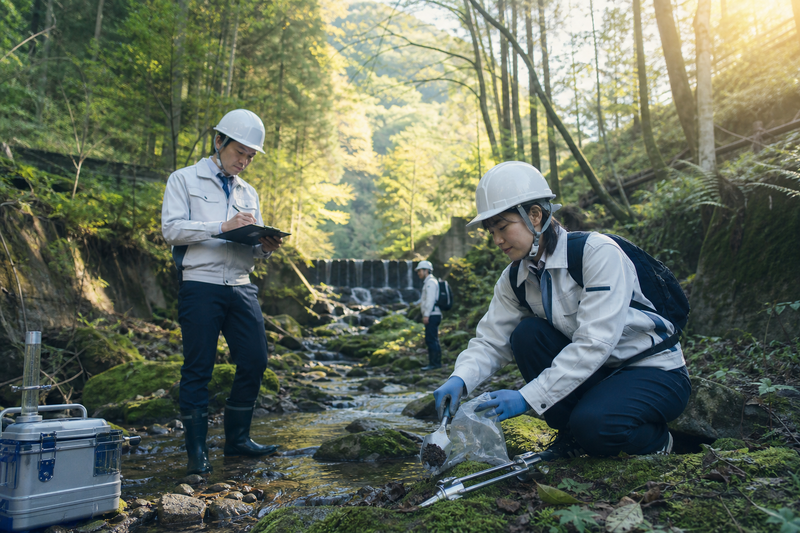
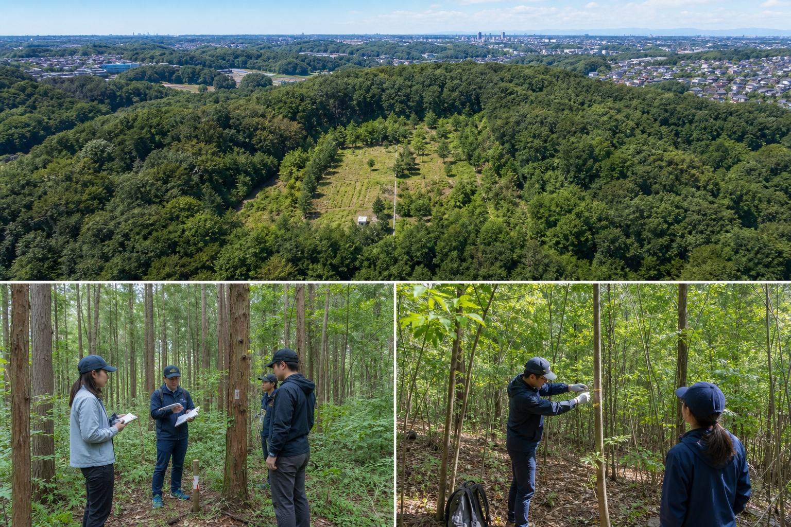
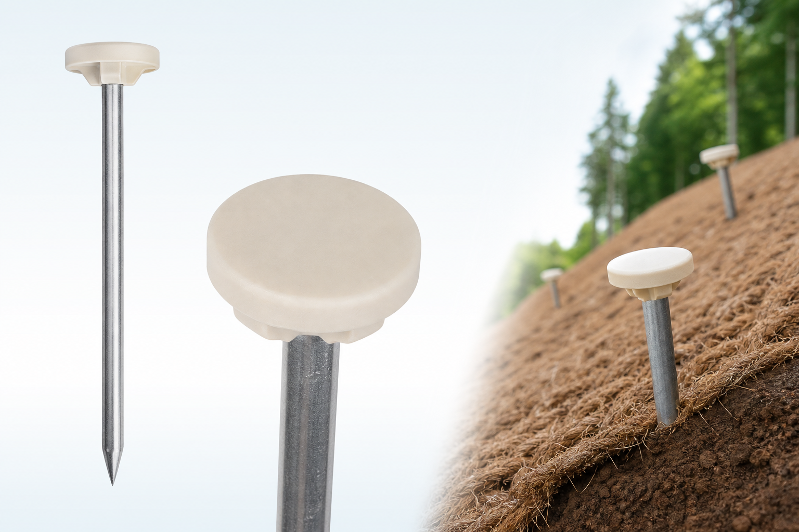
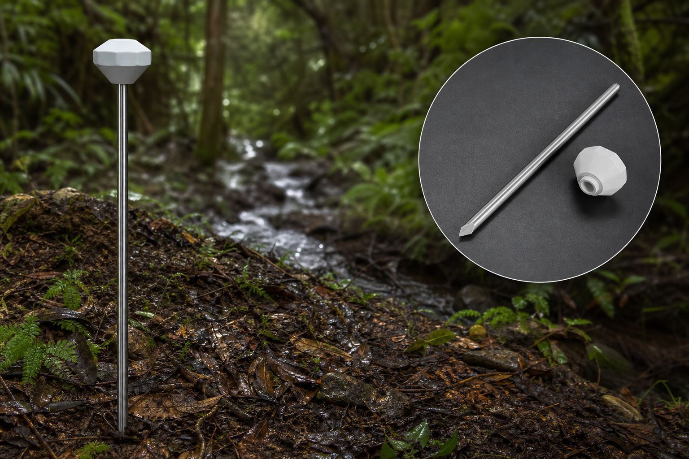
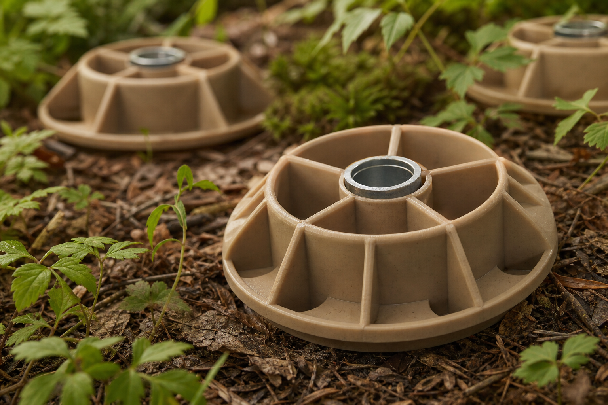

研究
林野庁「水資源涵養量の簡易評価手法」をベースに、関東甲信の気候・地質に即した現場検証を実施。東京大学農学博士の監修のもと、森林土壌と水文の知見を蓄積します。

LIBERTAは土木・外構・造成の現場力を土台に、水源涵養という国家的課題に向き合う研究部門を持ちます。単なる作業の請負ではなく、現場の知見を科学的手法で検証し、次世代へ伝えるプロフェッショナル人材を育成しています。
林野庁「水資源涵養量の簡易評価手法」をベースに、関東甲信の気候・地質に即した現場検証を実施。東京大学農学博士の監修のもと、森林土壌と水文の知見を蓄積します。
研究結果を造成・外構・森林整備の現場にフィードバック。直接流出の抑制、蒸発散の把握、林地と裸地の水量比較など、施工判断に活かせる知見を日常業務へつなげます。
演習林での実習・観測・データ記録を通じ、土木職人・施工管理スタッフが「水と森を読む」プロフェッショナルへ成長する場を提供。ICT・3Dプリントと組み合わせた次世代の現場力を養います。

LIBERTAの水源涵養研究は、東京都稲城市に設けた演習林を拠点に行っています。関東甲信地方の気候帯・地質条件のもとで、間伐・下草管理・土壌観測・降雨流出のモニタリングを継続的に実施。
100ha以下の狭域森林を対象とした簡易評価手法の考え方に沿い、企業の森林づくり活動がもたらす水資源貯留効果を、現場で検証・記録できる体制を整えています。社内研修・共同研究・地域連携の場としても活用しています。
林野庁「林地における水資源涵養量（貯留機能）の簡易評価手法」を参考に、LIBERTAが現場で重視する知見を整理しています。
水資源涵養量（貯留機能の指標）
涵養量 ＝ 降水量 −（直接流出量 ＋ 蒸発散量）
森林に降った雨水のうち、地下水涵養・基底流出に寄与しうる水量を簡易に表す指標。林地は裸地と比べ、より多くの水を土壌に留められることが知られています。

雨水が森林土壌に浸透し、地中流として流出する過程で、洪水のピーク流量を低下させ、流出までの時間を遅らせます。土壌の孔隙が雨水を一時的に貯留し、流出を平準化するバッファ機能を果たします。

本研究の主眼。無降雨日にも河川流量を安定させる機能です。森林土壌と岩盤への浸透・貯留により、利用可能な水量を増やし、渇水期の水資源確保に貢献します。演習林ではこの貯留効果の定量的把握を重視しています。

森林土壌層での濾過、緩衝作用、化学的風化により、雨水の水質が改善・維持されます。落葉層と下草が地表侵食を防ぎ、清浄な水が湧き出る環境を支えます。
水源涵養は樹木の蒸散だけでなく、土壌の団粒構造に支えられています。表土が裸地化すると雨滴が団粒を破壊し、浸透しにくい状態に。間伐・下草管理・落葉層の保全を通じ、保水性と透水性を両立する土壌を維持することが、LIBERTAの現場施工と研究の接点です。
金属パーツと植物由来プラスチック（PLA）の複合製品 LIBERTA P として、演習林の研究と現場施工に直結する治具を開発しています。3Dプリンタによる均一品質と、現場条件に合わせたカスタマイズが可能です。

斜面の表層保護マットを森林土壌に固定し、雨滴の直接衝撃を和らげる治具。金属芯とPLA製ヘッドの複合構造で、裸地化を防ぎ浸透を促進。間伐跡地や施工通路の仮復旧に活用。

演習林での直接流出・浅い地中流出の観測点をマーキング。NFC対応の拡張も可能な金属ステークと、視認性の高いPLAヘッド。水資源涵養量の検証データ取得を現場で効率化します。

林内作業通路や資材置場の足元に設置し、集中踏み込みによる団粒破壊を局所化・軽減。落葉層と表土の保護を担うリング状治具。造成・外構現場から森林整備まで横展開可能。
※治具は演習林での試験を経て改良を重ねています。詳細は LIBERTA LAB のラインナップもご覧ください。
重機操作や施工の腕前に加え、森林土壌・水文の基礎を理解。演習林での実地研修により、「なぜこの整備が水を留めるのか」を説明できる職人を育成します。
降水量・流出量・涵養量の概念を施工計画に組み込み。IoTセンサーとLIBERTA P治具を組み合わせ、エビデンスのある現場運営を実践します。
東京大学農学博士をはじめ外部有識者と連携し、グリーンウォッシュにならない科学的裏付けを重視。企業の森林づくり支援やJ-クレジット創出にもつながる知見を社内に蓄積します。
ベテランの暗黙知をヒアリングシートと3Dデータ化で残し、若手が継承しやすい形に。単なる作業ではなく、改善と研究のサイクルを回す文化を醸成します。